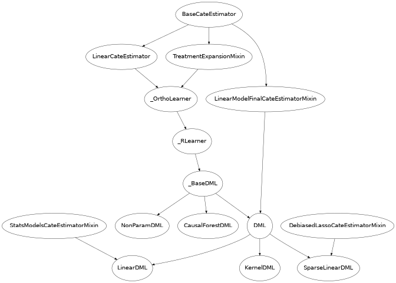

Orthogonal/Double Machine Learning
What is it?
Double Machine Learning is a method for estimating (heterogeneous) treatment effects when all potential confounders/controls (factors that simultaneously had a direct effect on the treatment decision in the collected data and the observed outcome) are observed, but are either too many (high-dimensional) for classical statistical approaches to be applicable or their effect on the treatment and outcome cannot be satisfactorily modeled by parametric functions (non-parametric). Both of these latter problems can be addressed via machine learning techniques (see e.g. [Chernozhukov2016]).
The method reduces the problem to first estimating two predictive tasks:
predicting the outcome from the controls,
predicting the treatment from the controls;
Then the method combines these two predictive models in a final stage estimation so as to create a model of the heterogeneous treatment effect. The approach allows for arbitrary Machine Learning algorithms to be used for the two predictive tasks, while maintaining many favorable statistical properties related to the final model (e.g. small mean squared error, asymptotic normality, construction of confidence intervals).
Our package offers several variants for the final model estimation. Many of these variants also provide valid inference (confidence interval construction) for measuring the uncertainty of the learned model.
What are the relevant estimator classes?
This section describes the methodology implemented in the classes, _RLearner,
DML, LinearDML,
SparseLinearDML, KernelDML, NonParamDML,
CausalForestDML.
Click on each of these links for a detailed module documentation and input parameters of each class.
When should you use it?
Suppose you have observational (or experimental from an A/B test) historical data, where some treatment(s)/intervention(s)/action(s) \(T\) were chosen and some outcome(s) \(Y\) were observed and all the variables \(W\) that could have potentially gone into the choice of \(T\), and simultaneously could have had a direct effect on the outcome \(Y\) (aka controls or confounders) are also recorded in the dataset.
If your goal is to understand what was the effect of the treatment on the outcome as a function of a set of observable characteristics \(X\) of the treated samples, then one can use this method. For instance call:
from econml.dml import LinearDML
est = LinearDML()
est.fit(y, T, X=X, W=W)
est.const_marginal_effect(X)
This way an optimal treatment policy can be learned, by simply inspecting for which \(X\) the effect was positive.
Most of the methods provided make a parametric form assumption on the heterogeneous treatment effect model (e.g.
linear on some pre-defined; potentially high-dimensional; featurization). These methods include:
DML, LinearDML,
SparseLinearDML, KernelDML.
For fully non-parametric heterogeneous treatment effect models, check out the NonParamDML
and the CausalForestDML.
For more options of non-parametric CATE estimators,
check out the Forest Estimators User Guide
and the Meta Learners User Guide.
Overview of Formal Methodology
The model makes the following structural equation assumptions on the data generating process.
What is particularly attractive about DML is that it makes no further structural assumptions on \(g\) and \(f\) and estimates them non-parametrically using arbitrary non-parametric Machine Learning methods. Our goal is to estimate the constant marginal CATE \(\theta(X)\).
The idea to estimate \(\theta(X)\) is as follows: we can re-write the structural equations as
Thus if one can estimate the conditional expectation functions (both of which are non-parametric regression tasks):
Then we can compute the residuals:
which are subsequently related by the equation:
Subsequently, since \(\E[\epsilon \cdot \eta | X]=0\), estimating \(\theta(X)\) is a final regression problem, regressing \(\tilde{Y}\) on \(X, \tilde{T}\) (albeit over models that are linear in \(\tilde{T}\)), i.e.
This approach has been analyzed in multiple papers in the literature, for different model classes \(\Theta\). [Chernozhukov2016] consider the case where \(\theta(X)\) is a constant (average treatment effect) or a low dimensional linear function, [Nie2017] consider the case where \(\theta(X)\) falls in a Reproducing Kernel Hilbert Space (RKHS), [Chernozhukov2017], [Chernozhukov2018] consider the case of a high dimensional sparse linear space, where \(\theta(X)=\langle \theta, \phi(X)\rangle\) for some known high-dimensional feature mapping and where \(\theta_0\) has very few non-zero entries (sparse), [Athey2019] (among other results) consider the case where \(\theta(X)\) is a non-parametric lipschitz function and use random forest models to fit the function, [Foster2019] allow for arbitrary models \(\theta(X)\) and give results based on sample complexity measures of the model space (e.g. Rademacher complexity, metric entropy).
The main advantage of DML is that if one makes parametric assumptions on \(\theta(X)\), then one achieves fast estimation rates and,
for many cases of final stage estimators, also asymptotic normality on the second stage estimate \(\hat{\theta}\), even if the first stage estimates on \(q(X, W)\)
and \(f(X, W)\) are only \(n^{1/4}\) consistent, in terms of RMSE. For this theorem to hold, the nuisance
estimates need to be fitted in a cross-fitting manner (see _OrthoLearner).
The latter robustness property follows from the fact that the moment equations that correspond to the final
least squares estimation (i.e. the gradient of the squared loss), satisfy a Neyman orthogonality condition with respect to the
nuisance parameters \(q, f\). For a more detailed exposition of how Neyman orthogonality
leads to robustness we refer the reader to [Chernozhukov2016], [Mackey2017], [Nie2017], [Chernozhukov2017],
[Chernozhukov2018], [Foster2019].
Class Hierarchy Structure
In this library we implement variants of several of the approaches mentioned in the last section. The hierarchy structure of the implemented CATE estimators is as follows.

Below we give a brief description of each of these classes:
DML. The class
DMLassumes that the effect model for each outcome \(i\) and treatment \(j\) is linear, i.e. takes the form \(\theta_{ij}(X)=\langle \theta_{ij}, \phi(X)\rangle\), and allows for any arbitrary scikit-learn linear estimator to be defined as the final stage (e.g.ElasticNet,Lasso,LinearRegressionand their multi-task variations in the case where we have multiple outcomes, i.e. \(Y\) is a vector). The final linear model will be fitted on features that are derived by the Kronecker-product of the vectors \(T\) and \(\phi(X)\), i.e. \(\tilde{T}\otimes \phi(X) = \mathtt{vec}(\tilde{T}\cdot \phi(X)^T)\). This regression will estimate the coefficients \(\theta_{ijk}\) for each outcome \(i\), treatment \(j\) and feature \(k\). The final model is minimizing a regularized empirical square loss of the form:\[\hat{\Theta} = \arg\min_{\Theta} \E_n\left[ \left(\tilde{Y} - \Theta \cdot \tilde{T}\otimes \phi(X)\right)^2 \right] + \lambda R(\Theta)\]for some strongly convex regularizer \(R\), where \(\Theta\) is the parameter matrix of dimensions (number of outcomes, number of treatments * number of features). For instance, if \(Y\) is single dimensional and the lasso is used as model final, i.e.:
from econml.dml import DML from sklearn.linear_model import LassoCV from sklearn.ensemble import GradientBoostingRegressor est = DML(model_y=GradientBoostingRegressor(), model_t=GradientBoostingRegressor(), model_final=LassoCV(fit_intercept=False))then \(R(\Theta) =\|\Theta\|_1\), if ElasticNet is used as model final, i.e.:
from econml.dml import DML from sklearn.linear_model import ElasticNetCV from sklearn.ensemble import GradientBoostingRegressor est = DML(model_y=GradientBoostingRegressor(), model_t=GradientBoostingRegressor(), model_final=ElasticNetCV(fit_intercept=False))then \(R(\Theta)=\kappa \|\Theta\|_2 + (1-\kappa)\|\Theta\|_1\). For multi-dimensional \(Y\), one can impose several extensions to the matrix of parameters \(\Theta\), such as the one corresponding to the MultiTask Lasso \(\sum_{j} \sum_{i} \theta_{ij}^2\) or MultiTask ElasticNet or nuclear norm regularization [Jaggi2010], which enforces low-rank constraints on the matrix \(\Theta\). This essentially implements the techniques analyzed in [Chernozhukov2016], [Nie2017], [Chernozhukov2017], [Chernozhukov2018]
LinearDML. The child class
LinearDML, uses an unregularized final linear model and essentially works only when the feature vector \(\phi(X)\) is low dimensional. Given that it is an unregularized low dimensional final model, this class also offers confidence intervals via asymptotic normality arguments. This is achieved by essentially using theStatsModelsLinearRegression(which is an extension of the scikit-learn LinearRegression estimator, that also supports inference functionalities) as a final model. The theoretical foundations of this class essentially follow the arguments in [Chernozhukov2016]. For instance, to get confidence intervals on the effect of going from any treatment T0 to any other treatment T1, one can simply call:est = LinearDML() est.fit(y, T, X=X, W=W) point = est.effect(X, T0=T0, T1=T1) lb, ub = est.effect_interval(X, T0=T0, T1=T1, alpha=0.05)One could also construct bootstrap based confidence intervals by setting inference=’bootstrap’.
SparseLinearDML. The child class
SparseLinearDML, uses an \(\ell_1\)-regularized final model. In particular, it uses an implementation of the DebiasedLasso algorithm [Buhlmann2011] (seeDebiasedLasso). Using the asymptotic normality properties of the debiased lasso, this class also offers asymptotically normal based confidence intervals. The theoretical foundations of this class essentially follow the arguments in [Chernozhukov2017], [Chernozhukov2018]. For instance, to get confidence intervals on the effect of going from any treatment T0 to any other treatment T1, one can simply call:from econml.dml import SparseLinearDML est = SparseLinearDML() est.fit(y, T, X=X, W=W) point = est.effect(X, T0=T0, T1=T1) lb, ub = est.effect_interval(X, T0=T0, T1=T1, alpha=0.05)KernelDML. The child class
KernelDMLperforms a variant of the RKHS approach proposed in [Nie2017]. It approximates any function in the RKHS by creating random Fourier features. Then runs a ElasticNet regularized final model. Thus it approximately implements the results of [Nie2017], via the random fourier feature approximate representation of functions in the RKHS. Moreover, given that we use Random Fourier Features this class assumes an RBF kernel.NonParamDML. The class
NonParamDMLmakes no assumption on the effect model for each outcome \(i\). However, it applies only when the treatment is either binary or single-dimensional continuous. It uses the observation that for a single dimensional treatment, the square loss can be re-written as:\[\E_n\left[ \left(\tilde{Y} - \theta(X) \cdot \tilde{T}\right)^2 \right] = \E_n\left[ \tilde{T}^2 \left(\frac{\tilde{Y}}{\tilde{T}} - \theta(X)\right)^2 \right]\]The latter corresponds to a weighted regression problem, where the target label is \(\tilde{Y}/\tilde{T}\), the features are \(X\) and the weight of each sample is \(\tilde{T}^2\). Thus any scikit-learn regressor that accepts sample weights can be used as a final model, e.g.:
from econml.dml import NonParamDML from sklearn.ensemble import GradientBoostingRegressor est = NonParamDML(model_y=GradientBoostingRegressor(), model_t=GradientBoostingRegressor(), model_final=GradientBoostingRegressor()) est.fit(y, t, X=X, W=W) point = est.effect(X, T0=t0, T1=t1)Examples include Random Forests (
RandomForestRegressor), Gradient Boosted Forests (GradientBoostingRegressor) and Support Vector Machines (SVC). Moreover, we offer a wrapperWeightedModelWrapperthat adds sample weight functionality to any scikit-learn regressor. Moreover, for particular estimators we offer scikit-learn extensions that are more tailored such as theWeightedLasso. Hence, any such model and even cross validated estimators that perform automatic model selection can be used as model_final. From that respect this estimator is also a Meta-Learner, since all steps of the estimation use out-of-the-box ML algorithms. For more information, check out Meta Learners User Guide.CausalForestDML. This is a child of the
_RLearnerthat uses a Causal Forest as a final model (see [Wager2018] and [Athey2019]). The Causal Forest is implemented in the library as a scikit-learn predictor, in the classCausalForest. This estimator offers confidence intervals via the Bootstrap-of-Little-Bags as described in [Athey2019]. Using this functionality we can also construct confidence intervals for the CATE:from econml.dml import CausalForestDML from sklearn.ensemble import GradientBoostingRegressor est = CausalForestDML(model_y=GradientBoostingRegressor(), model_t=GradientBoostingRegressor()) est.fit(y, t, X=X, W=W) point = est.effect(X, T0=t0, T1=t1) lb, ub = est.effect_interval(X, T0=t0, T1=t1, alpha=0.05)Check out Forest Estimators User Guide for more information on forest based CATE models and other alternatives to the
CausalForestDML._RLearner. The internal private class
_RLearneris a parent of theDMLand allows the user to specify any way of fitting a final model that takes as input the residual \(\tilde{T}\), the features \(X\) and predicts the residual \(\tilde{Y}\). Moreover, the nuisance models take as input \(X\) and \(W\) and predict \(T\) and \(Y\) respectively. Since these models take non-standard input variables, one cannot use out-of-the-box scikit-learn estimators as inputs to this class. Hence, it is slightly more cumbersome to use, which is the reason why we designated it as private. However, if one wants to fit for instance a neural net model for \(\theta(X)\), then this class can be used (see the implementation of theDMLof how to wrap sklearn estimators and pass them as inputs to the_RLearner. This private class essentially follows the general arguments and terminology of the RLearner presented in [Nie2017], and allows for the full flexibility of the final model estimation that is presented in [Foster2019].
Usage FAQs
What if I want confidence intervals?
For valid confidence intervals use the
LinearDMLif the number of features \(X\), that you want to use for heterogeneity are small compared to the number of samples that you have. If the number of features is comparable to the number of samples, then useSparseLinearDML. e.g.:from econml.dml import LinearDML est = LinearDML() est.fit(y, T, X=X, W=W) lb, ub = est.const_marginal_effect_interval(X, alpha=.05) lb, ub = est.coef__interval(alpha=.05) lb, ub = est.effect_interval(X, T0=T0, T1=T1, alpha=.05)
If you have a single dimensional continuous treatment or a binary treatment, then you can also fit non-linear models and have confidence intervals by using the
CausalForestDML. This class will also perform well with high dimensional features, as long as only few of these features are actually relevant.Why not just run a simple big linear regression with all the treatments, features and controls?
If you want to estimate an average treatment effect with accompanied confidence intervals then one potential approach one could take is simply run a big linear regression, regressing \(Y\) on \(T, X, W\) and then looking at the coefficient associated with the \(T\) variable and the corresponding confidence interval (e.g. using statistical packages like
OLS). However, this will not work if:1) The number of control variables \(X, W\) that you have is large and comparable to the number of samples. This could for instance arise if one wants to control for unit fixed effects, in which case the number of controls is at least the number of units. In such high-dimensional settings, ordinary least squares (OLS) is not a reasonable approach. Typically, the covariance matrix of the controls, will be ill-posed and the inference will be invalid. The DML method bypasses this by using ML approaches to appropriately regularize the estimation and provide better models on how the controls affect the outcome, given the number of samples that you have.
2) The effect of the variables \(X, W\) on the outcome \(Y\) is not linear. In this case, OLS will not provide a consistent model, which could lead to heavily biased effect results. The DML approach, when combined with non-linear first stage models, like Random Forests or Gradient Boosted Forests, can capture such non-linearities and provide unbiased estimates of the effect of \(T\) on \(Y\). Moreover, it does so in a manner that is robust to the estimation mistakes that these ML algorithms might be making.
Moreover, one may typically want to estimate treatment effect heterogeneity, which the above OLS approach wouldn’t provide. One potential way of providing such heterogeneity is to include product features of the form \(X\cdot T\) in the OLS model. However, then one faces again the same problems as above:
1) If effect heterogeneity does not have a linear form, then this approach is not valid. One might want to then create more complex featurization, in which case the problem could become too high-dimensional for OLS. Our
SparseLinearDMLcan handle such settings via the use of the debiased Lasso. OurCausalForestDMLdoes not even need explicit featurization and learns non-linear forest based CATE models, automatically. Also see the Forest Estimators User Guide and the Meta Learners User Guide, if you want even more flexible CATE models.2) If the number of features \(X\) is comparable to the number of samples, then even with a linear model, the OLS approach is not feasible or has very small statistical power.
What if I have no idea how heterogeneity looks like?
Either use a flexible featurizer, e.g. a polynomial featurizer with many degrees and use the
SparseLinearDML:from econml.dml import SparseLinearDML from sklearn.preprocessing import PolynomialFeatures est = SparseLinearDML(featurizer=PolynomialFeatures(degree=4, include_bias=False)) est.fit(y, T, X=X, W=W) lb, ub = est.const_marginal_effect_interval(X, alpha=.05)
Alternatively, you can also use a forest based estimator such as
CausalForestDML. This estimator can also handle many features, albeit typically smaller number of features than the sparse linear DML. Moreover, this estimator essentially performs automatic featurization and can fit non-linear models.from econml.dml import CausalForestDML from sklearn.ensemble import GradientBoostingRegressor est = CausalForestDML(model_y=GradientBoostingRegressor(), model_t=GradientBoostingRegressor()) est.fit(y, t, X=X, W=W) lb, ub = est.const_marginal_effect_interval(X, alpha=.05)
Also the check out the Orthogonal Random Forest User Guide or the Meta Learners User Guide.
What if I have too many features that can create heterogeneity?
Use the
SparseLinearDMLorCausalForestDML(see above).What if I have too many features I want to control for?
Use first stage models that work well with high dimensional features. For instance, the Lasso or the ElasticNet or gradient boosted forests are all good options (the latter allows for non-linearities in the model but can typically handle fewer features than the former), e.g.:
from econml.dml import SparseLinearDML from sklearn.linear_model import LassoCV, ElasticNetCV from sklearn.ensemble import GradientBoostingRegressor est = SparseLinearDML(model_y=LassoCV(), model_t=LassoCV()) est = SparseLinearDML(model_y=ElasticNetCV(), model_t=ElasticNetCV()) est = SparseLinearDML(model_y=GradientBoostingRegressor(), model_t=GradientBoostingRegressor())
The confidence intervals will still be valid, provided that these first stage models achieve small mean squared error.
What should I use for first stage estimation?
See above. The first stage problems are pure predictive tasks, so any ML approach that is relevant for your prediction problem is good.
How do I select the hyperparameters of the first stage models?
You can use cross-validated models that automatically choose the hyperparameters, e.g. the
LassoCVinstead of theLasso. Similarly, for forest based estimators you can wrap them with a grid search CV,GridSearchCV, e.g.:from econml.dml import SparseLinearDML from sklearn.ensemble import RandomForestRegressor from sklearn.model_selection import GridSearchCV first_stage = lambda: GridSearchCV( estimator=RandomForestRegressor(), param_grid={ 'max_depth': [3, None], 'n_estimators': (10, 30, 50, 100, 200), 'max_features': (1,2,3) }, cv=10, n_jobs=-1, scoring='neg_mean_squared_error' ) est = SparseLinearDML(model_y=first_stage(), model_t=first_stage())
Alternatively, you can pick the best first stage models outside of the EconML framework and pass in the selected models to EconML. This can save on runtime and computational resources. Furthermore, it is statistically more stable since all data is being used for hyper-parameter tuning rather than a single fold inside of the DML algorithm (as long as the number of hyperparameter values that you are selecting over is not exponential in the number of samples, this approach is statistically valid). E.g.:
from econml.dml import LinearDML from sklearn.ensemble import RandomForestRegressor from sklearn.model_selection import GridSearchCV first_stage = lambda: GridSearchCV( estimator=RandomForestRegressor(), param_grid={ 'max_depth': [3, None], 'n_estimators': (10, 30, 50, 100, 200), 'max_features': (1,2,3) }, cv=10, n_jobs=-1, scoring='neg_mean_squared_error' ) model_y = first_stage().fit(X, Y).best_estimator_ model_t = first_stage().fit(X, T).best_estimator_ est = LinearDML(model_y=model_y, model_t=model_t)
How do I select the hyperparameters of the final model (if any)?
You can use cross-validated classes for the final model too. Our default debiased lasso performs cross validation for hyperparameter selection. For custom final models you can also use CV versions, e.g.:
from econml.dml import DML from sklearn.linear_model import ElasticNetCV from sklearn.ensemble import GradientBoostingRegressor est = DML(model_y=GradientBoostingRegressor(), model_t=GradientBoostingRegressor(), model_final=ElasticNetCV(fit_intercept=False)) est.fit(y, t, X=X, W=W) point = est.const_marginal_effect(X) point = est.effect(X, T0=t0, T1=t1)
In the case of
NonParamDMLyou can also use non-linear cross-validated models as model_final:from econml.dml import NonParamDML from sklearn.ensemble import RandomForestRegressor from sklearn.model_selection import GridSearchCV cv_reg = lambda: GridSearchCV( estimator=RandomForestRegressor(), param_grid={ 'max_depth': [3, None], 'n_estimators': (10, 30, 50, 100, 200, 400, 600, 800, 1000), 'max_features': (1,2,3) }, cv=10, n_jobs=-1, scoring='neg_mean_squared_error' ) est = NonParamDML(model_y=cv_reg(), model_t=cv_reg(), model_final=cv_reg())
What if I have many treatments?
The method is going to assume that each of these treatments enters linearly into the model. So it cannot capture complementarities or substitutabilities of the different treatments. For that you can also create composite treatments that look like the product of two base treatments. Then these product will enter in the model and an effect for that product will be estimated. This effect will be the substitute/complement effect of both treatments being present. See below for more examples.
If you have too many treatments, then you can use the
SparseLinearDML. However, this method will essentially impose a regularization that only a small subset of your featurized treatments has any effect.What if my treatments are continuous and don’t have a linear effect on the outcome?
You can impose a particular form of non-linearity by specifying a treatment_featurizer to the estimator. For example, one can use the sklearn PolynomialFeatures transformer as a treatment_featurizer in order to learn higher-order polynomial treatment effects.
Using the treatment_featurizer argument additionally has the benefit of calculating marginal effects with respect to the original treatment dimension, as opposed to featurizing the treatment yourself before passing to the estimator.
from econml.dml import LinearDML from sklearn.preprocessing import PolynomialFeatures poly = PolynomialFeatures(degree=2, interaction_only=True, include_bias=False) est = LinearDML(treatment_featurizer=poly) est.fit(y, T, X=X, W=W) point = est.const_marginal_effect(X) est.effect(X, T0=T0, T1=T1) est.marginal_effect(T, X)
Alternatively, you can still create composite treatments and add them as extra treatment variables:
from econml.dml import LinearDML from sklearn.preprocessing import PolynomialFeatures poly = PolynomialFeatures(degree=2, interaction_only=True, include_bias=False) est = LinearDML() T_composite = poly.fit_transform(T) est.fit(y, T_composite, X=X, W=W) point = est.const_marginal_effect(X) est.effect(X, T0=poly.transform(T0), T1=poly.transform(T1))
What if my treatment is categorical/binary?
You can simply set discrete_treatment=True in the parameters of the class. Then use any classifier for model_t, that has a predict_proba method:
from econml.dml import LinearDML from sklearn.linear_model import LogisticRegressionCV est = LinearDML(model_t=LogisticRegressionCV(), discrete_treatment=True) est.fit(y, t, X=X, W=W) point = est.const_marginal_effect(X) est.effect(X, T0=t0, T1=t1)
How can I assess the performance of the CATE model?
Each of the DML classes have an attribute score_ after they are fitted. So one can access that attribute and compare the performance across different modeling parameters (lower score is better):
from econml.dml import DML from sklearn.linear_model import ElasticNetCV from sklearn.ensemble import RandomForestRegressor est = DML(model_y=RandomForestRegressor(), model_t=RandomForestRegressor(), model_final=ElasticNetCV(fit_intercept=False), featurizer=PolynomialFeatures(degree=1)) est.fit(y, T, X=X, W=W) est.score_
This essentially measures the score based on the final stage loss. Moreover, one can assess the out-of-sample score by calling the score method on a separate validation sample that was not used for training:
est.score(Y_val, T_val, X_val, W_val)
Moreover, one can independently check the goodness of fit of the fitted first stage models by inspecting the fitted models. You can access the nested list of fitted first stage models (one for each fold of the crossfitting structure) via the methods: models_t and models_y. Then if those models also have a score associated attribute, that can be used as an indicator of performance of the first stage. For instance in the case of Random Forest first stages as in the above example, if the oob_score is set to True, then the estimator has a post-fit measure of performance:
[mdl.oob_score_ for mdls in est.models_y for mdl in mdls]
If one uses cross-validated estimators as first stages, then model selection for the first stage models is performed automatically.
How should I set the parameter `cv`?
This parameter defines the number of data partitions to create in order to fit the first stages in a crossfitting manner (see
_OrthoLearner). The default is 2, which is the minimal. However, larger values like 5 or 6 can lead to greater statistical stability of the method, especially if the number of samples is small. So we advise that for small datasets, one should raise this value. This can increase the computational cost as more first stage models are being fitted.
Usage Examples
For more extensive examples check out the following notebooks: DML Examples Jupyter Notebook, Forest Learners Jupyter Notebook.
Single Outcome, Single Treatment
We consider some example use cases of the library when \(Y\) and \(T\) are \(1\)-dimensional.
Random Forest First Stages. A classical non-parametric regressor for the first stage estimates is a Random Forest. Using RandomForests in our API is as simple as:
from econml.dml import LinearDML
from sklearn.ensemble import RandomForestRegressor
est = LinearDML(model_y=RandomForestRegressor(),
model_t=RandomForestRegressor())
est.fit(y, T, X=X, W=W)
pnt_effect = est.const_marginal_effect(X)
lb_effect, ub_effect = est.const_marginal_effect_interval(X, alpha=.05)
pnt_coef = est.coef_
lb_coef, ub_coef = est.coef__interval(alpha=.05)
Polynomial Features for Heterogeneity. Suppose that we believe that the treatment effect is a polynomial of \(X\), i.e.
Then we can estimate the coefficients \(\alpha_i\) by running:
from econml.dml import LinearDML
from sklearn.ensemble import RandomForestRegressor
from sklearn.preprocessing import PolynomialFeatures
est = LinearDML(model_y=RandomForestRegressor(),
model_t=RandomForestRegressor(),
featurizer=PolynomialFeatures(degree=3, include_bias=True))
est.fit(y, T, X=X, W=W)
# To get the coefficients of the polynomial fitted in the final stage we can
# access the `coef_` attribute of the fitted second stage model. This would
# return the coefficients in front of each term in the vector T⊗ϕ(X).
est.coef_
Fixed Effects. To add fixed effect heterogeneity, we can create one-hot encodings of the id, which is assumed to be part of the input:
from econml.dml import LinearDML
from sklearn.preprocessing import OneHotEncoder
# removing one id to avoid colinearity, as is standard for fixed effects
X_oh = OneHotEncoder(sparse_output=False).fit_transform(X)[:, 1:]
est = LinearDML(model_y=RandomForestRegressor(),
model_t=RandomForestRegressor())
est.fit(y, T, X=X_oh, W=W)
# The latter will fit a model for θ(x) of the form ̂α_0 + ̂α_1 𝟙{id=1} + ̂α_2 𝟙{id=2} + ...
# The vector of α can be extracted as follows
est.coef_
Custom Features. One can also define a custom featurizer, as long as it supports the fit_transform interface of sklearn.
from sklearn.ensemble import RandomForestRegressor
class LogFeatures(object):
"""Augments the features with logarithmic features and returns the augmented structure"""
def fit(self, X, y=None):
return self
def transform(self, X):
return np.concatenate((X, np.log(1+X)), axis=1)
def fit_transform(self, X, y=None):
return self.fit(X).transform(X)
est = LinearDML(model_y=RandomForestRegressor(),
model_t=RandomForestRegressor(),
featurizer=LogFeatures())
est.fit(y, T, X=X, W=W)
We can even create a Pipeline or Union of featurizers that will apply multiply featurizations, e.g. first creating log features and then adding polynomials of them:
from econml.dml import LinearDML
from sklearn.ensemble import RandomForestRegressor
from sklearn.pipeline import Pipeline
from sklearn.preprocessing import PolynomialFeatures
est = LinearDML(model_y=RandomForestRegressor(),
model_t=RandomForestRegressor(),
featurizer=Pipeline([('log', LogFeatures()),
('poly', PolynomialFeatures(degree=2))]))
est.fit(y, T, X=X, W=W)
Single Outcome, Multiple Treatments
Suppose we want to estimate treatment effects for multiple continuous treatments at the same time. Then we can simply concatenate them before passing them to the estimator.
import numpy as np
est = LinearDML()
est.fit(y, np.concatenate((T0, T1), axis=1), X=X, W=W)
Multiple Outcome, Multiple Treatments
In settings like demand estimation, we might want to fit the demand of multiple products as a function of the price of each one of them, i.e. fit the matrix of cross price elasticities. The latter can be done, by simply setting \(Y\) to be the vector of demands and \(T\) to be the vector of prices. Then we can recover the matrix of cross price elasticities as:
from sklearn.linear_model import MultiTaskElasticNet
est = LinearDML(model_y=MultiTaskElasticNet(alpha=0.1),
model_t=MultiTaskElasticNet(alpha=0.1))
est.fit(Y, T, X=None, W=W)
# a_hat[i,j] contains the elasticity of the demand of product i on the price of product j
a_hat = est.const_marginal_effect()
If we have too many products then the cross-price elasticity matrix contains many parameters and we need to regularize. Given that we want to estimate a matrix, it makes sense in this application to consider the case where this matrix has low rank: all the products can be embedded in some low dimensional feature space and the cross-price elasticities is a linear function of these low dimensional embeddings. This corresponds to well-studied latent factor models in pricing. Our framework can easily handle this by using a nuclear norm regularized multi-task regression in the final stage. For instance the lightning package implements such a class:
from econml.dml import DML
from sklearn.preprocessing import PolynomialFeatures
from lightning.regression import FistaRegressor
from sklearn.linear_model import MultiTaskElasticNet
est = DML(model_y=MultiTaskElasticNet(alpha=0.1),
model_t=MultiTaskElasticNet(alpha=0.1),
model_final=FistaRegressor(penalty='trace', C=0.0001),
fit_cate_intercept=False)
est.fit(Y, T, X=X, W=W)
te_pred = est.const_marginal_effect(np.median(X, axis=0, keepdims=True))
print(te_pred)
print(np.linalg.svd(te_pred[0]))